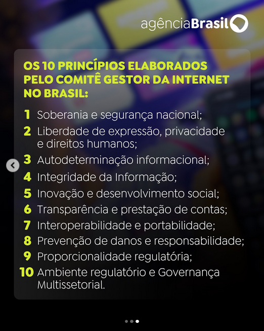

Jornal 'A Verdade', Meta, Palestina e 2 opções para a regulamentação das redes
Jornal 'A Verdade', Meta, Palestina e 2 opções para a regulamentação das redes
https://averdade.org.br/2025/06/censura-da-meta-suspende-pagina-do-jornal-a-verdade-no-instagram/
Em mais um ataque à imprensa dos trabalhadores, o monopólio capitalista Meta, controlador do Instagram, tirou do ar a conta do Jornal A Verdade. O ataque à liberdade de imprensa ocorreu na tarde desta quinta-feira (05), com a suspensão da página, e foi consumado na manhã deste dia 06 com o anúncio do banimento.
A página do Jornal A Verdade no Instagram era uma das principais da imprensa independente e de esquerda no Brasil. Com 100 mil seguidores, o perfil reproduzia as matérias publicadas no jornal impresso, as notícias do site, além de material exclusivo de audiovisual.
Nossa página se destacou em coberturas de lutas importantes do povo trabalhador, como a tentativa de despejo da Favela do Moinho, em São Paulo, a luta contra as privatizações, as ocupações urbanas e contra a fome organizadas pelo MLB, as greves de várias categorias e a luta dos estudantes. Também somos uma voz ativa na denúncia contra o genocídio do povo palestino.
A Meta e o genocídio Rohingya
Nos meses e anos anteriores à repressão, o Facebook em Mianmar havia se tornado uma câmara de eco de conteúdo anti-rohingya. Atores ligados ao exército de Mianmar e a grupos nacionalistas budistas radicais inundaram a plataforma com conteúdo antimuçulmano, publicando desinformação alegando que haveria uma iminente tomada de poder pelos muçulmanos e retratando os rohingya como "invasores".
A Meta e o genocídio Palestino
A análise dos casos pela Human Rights Watch sugere quatro fatores subjacentes e sistêmicos que contribuíram para a censura:
- Falhas nas políticas do Meta, principalmente em sua política de Organizações e Indivíduos Perigosos (DOI), que proíbe organizações ou indivíduos "que proclamam uma missão violenta ou estão envolvidos em violência" em suas plataformas. Compreensivelmente, a política proíbe a incitação à violência. No entanto, também contém proibições abrangentes de categorias vagas de discurso, como "elogio" e "apoio" a "organizações perigosas", cuja definição se baseia fortemente nas listas de organizações terroristas do governo dos Estados Unidos. A lista dos EUA inclui movimentos políticos com braços armados, como o Hamas e a Frente Popular para a Libertação da Palestina. A forma como o Meta aplica essa política efetivamente proíbe muitas postagens que endossam os principais movimentos políticos palestinos e reprime a discussão sobre Israel e Palestina;
- Aplicação inconsistente e opaca das políticas do Meta, em particular no que diz respeito a exceções para conteúdo jornalístico, ou seja, conteúdo que o Meta permite que permaneça visível no interesse público, mesmo que viole suas políticas;
- Aparente deferência aos pedidos de remoção de conteúdo por parte dos governos, como os pedidos da Unidade Cibernética de Israel e das unidades de referência da internet de outros países para remoção de conteúdo;
- Forte dependência de ferramentas automatizadas de remoção de conteúdo para moderar ou traduzir conteúdo relacionado à Palestina.
A Meta coopera de perto com o exército de Israel
https://www.donotpanic.news/p/metas-head-of-ai-policy-is-ex-idf
Regulamentação das redes
https://dialogos.cgi.br/documentos/debate/regulacao-redes-sociais/
https://www.instagram.com/p/DKj7dDNsu6E/

2 opções para a regulamentação
- Regulamentação direta das redes: remoção de conteúdo, definição de regras, limites e transparência
- Criação de plataformas e "nichos" para as diferentes atividades na internet e limitação do poder das big techs